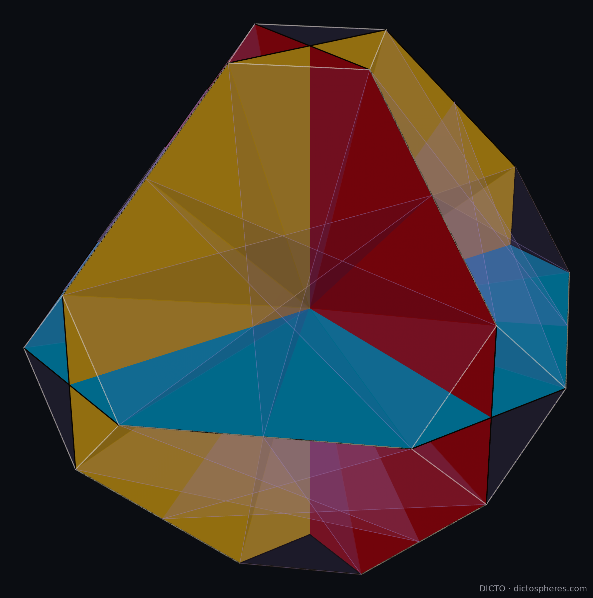

The permutohedron of five values carried this book's two four-dimensional stories, its Vacuus and its sweep. Both continue in every dimension.
The construction works for the permutohedron of 1, …, n in dimension n − 1: its ridges (faces one dimension below the cells) are the ordered splits into three blocks, and each spans one central slice with the centre.
| n (dimension) | 3 (2) | 4 (3) | 5 (4) | 6 (5) | 7 (6) | 8 (7) | 9 (8) |
|---|---|---|---|---|---|---|---|
| ridges | 6 | 36 | 150 | 540 | 1806 | 5796 | 18150 |
| Vacuus slices N(n) | 3 | 15 | 65 | 225 | 770 | 2443 | 7761 |
Proof. By the normal formula, a split with a ≠ c gives a slice whose normal takes three different values; the normal is unique up to scale, its level sets are the blocks, its one negative level is B₂, and the two positive levels are B₁ and B₃ in either order, so only the split and its reverse give the slice, and no two-valued slice can equal it: the first sum. A split with a = c gives a normal with two values, c₁ on S = B₁ ∪ B₃ (of even size 2a) and c₂ on the middle block T; the ratio c₁ : c₂ = −b : 2a depends only on the sizes of S and T, so the slice is fixed by the unordered pair {S, T}, and every pair with |S| even and at least 2 occurs. When n is odd exactly one of S, T has even size: 2n−1 − 1 pairs. When n is even, |S| = 2a is even so |T| is even too, and the split (a, b, a) gives the same slice as (b/2, 2a, b/2) with S and T exchanged: the pairs with both parts even, (2n−1 − 2)/2 = 2n−2 − 1. The two-valued slices are the hyperplanes Σi∈S xi = 0 through the centre (centred coordinates), parallel to facets: members of the resonance (all-subsets) arrangement (Kamiya, Takemura and Terao 2011; Billera et al. 2012; Kühne 2023). The three-valued slices are not of that kind. In closed form, with cn the central trinomial coefficient (1, 1, 3, 7, 19, 51, …; OEIS A002426), the splits with a = c number An = cn − 1 − [n even]·C(n, n/2), and N(n) = (3n − 3·2n + 3 − An)/2 + T(n). Brute force over every ridge for n = 3, …, 9, with each slice found by exact elimination, gives the same numbers (vacuus_general.py). ∎
In two dimensions the Vacuus of the hexagon is its three long diagonals; in three, the 3D permutohedron's 36 edges lie on 15 planes through its centre. So do the 36 edges of the DICTO 1:2 Truncated Octahedron: its 15 cards are three octagons in the three coordinate planes, slotted at right angles like the three squares of the octahedron Vacuus, each carrying 4 edges, and twelve hexagons carrying 2 each (Figure 4; vacuus3d_12.py, exact). Neither N(n) nor its three-valued part (0, 12, 50, 210, 707, 2380, 7506) is in the On-Line Encyclopedia of Integer Sequences (searched 11 November 2026 for 3, 15, 65, 225, 770, 2443 and for 12, 50, 210, 707, 2380); we make no stronger claim of novelty.

Proof. As for Proposition 5.1: exchanging k (at position p) and k + 1 (at q) changes f by up − uq, negative exactly when p < q; the orderings counted by how many k precede k + 1 are counted by the Eulerian numbers (Petersen 2015). Listed directly for n = 3 to 7 (sweep_all_n.py). ∎
DICTO: #105 DICTO 1:2 Truncated Octahedron: The 4D Vacuus of the Permutohedron (Section 4, Theorem 3, Figure 4); #104 Scutoid Tissues in Four Dimensions (Theorem 1′); The Permutohedron Paradigm, Chapters 5 and 6. T. K. Petersen, Eulerian Numbers, Birkhäuser (2015), doi:10.1007/978-1-4939-3091-3.
Further reading. G. M. Ziegler, Lectures on Polytopes (1995), doi:10.1007/978-1-4613-8431-1; A. Postnikov, Int. Math. Res. Not. 2009, doi:10.1093/imrn/rnn153; P. McMullen, Mathematika 17 (1970) 179–184.